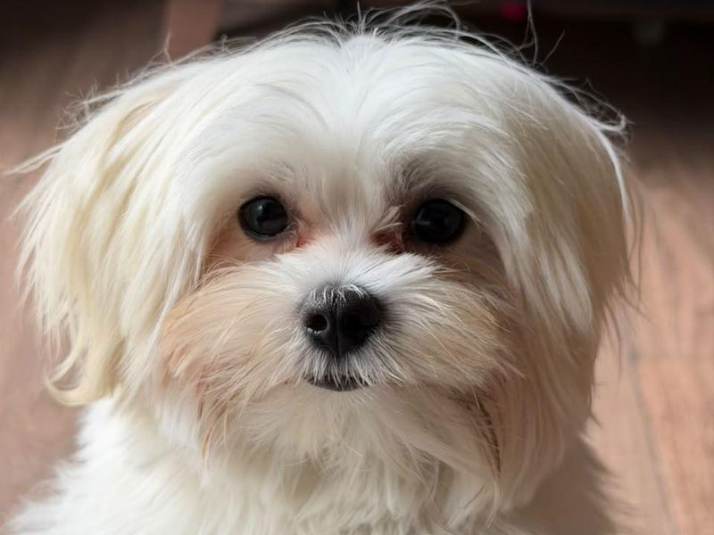
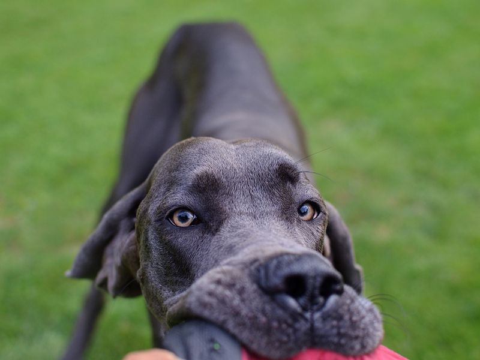
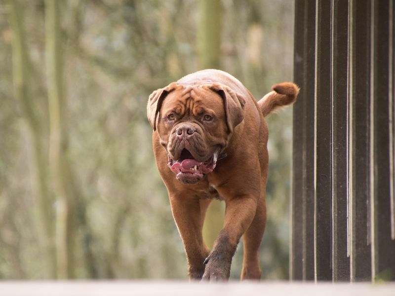

Zeca
Macho · 2 anos · porte pequeno
Dócil e companheiro, gosta de colo e de passeios curtos no parque.
Quero conhecer o ZecaSegunda página da nossa lista. Para voltar à apresentação do abrigo, use o menu.
Conheça quem está esperando uma família. Todos são vacinados, vermifugados e castrados (ou serão castrados na idade certa).

Macho · 2 anos · porte pequeno
Dócil e companheiro, gosta de colo e de passeios curtos no parque.
Quero conhecer o Zeca
Macho · 1 ano · porte grande
Jovem cheio de energia, adora cabo de guerra. Precisa de quintal e de passeios longos.
Quero conhecer o Rengar
Macho · 4 anos · porte grande
Grandão de coração mole: tranquilo dentro de casa e muito apegado a quem cuida dele.
Quero conhecer o Boneco